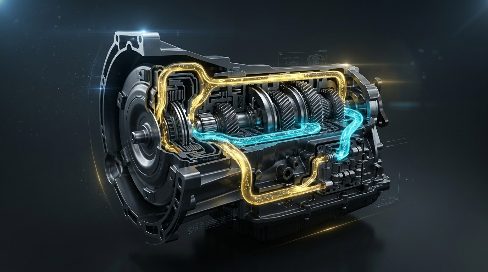

Zakres usług serwisowych
Oferujemy specjalistyczny serwis układów przeniesienia napędu oraz pełną obsługę mechaniczną samochodów osobowych i dostawczych.
Automatyczne skrzynie biegów (ASB)
- Naprawa skrzyń dwusprzęgłowych i klasycznych: DSG, tiptronic, S-tronic, MPS6 i innych
- Dynamiczna wymiana oleju w automatycznej skrzyni biegów
- Wymiana sprzęgieł suchych oraz mokrych
- Diagnostyka i usuwanie szarpnięć oraz opóźnień zmiany biegów
Mechanika pojazdowa
- Wymiana sprzęgieł w układach manualnych
- Kompleksowa wymiana rozrządów
- Naprawa układów hamulcowych (tarcze, klocki, zaciski, przewody)
- Naprawa i regeneracja elementów zawieszenia
- Naprawa manualnych skrzyń biegów
Dlaczego dynamiczna wymiana oleju w ASB jest tak ważna?
Tradycyjna wymiana statyczna pozwala spuścić jedynie część zużytego płynu. Procedura dynamicznej wymiany oleju umożliwia wymianę całego oleju w skrzyni automatycznej (wraz z konwerterem i chłodnicą) oraz dokładne usunięcie z niej zanieczyszczeń, co znacząco poprawia kulturę pracy i żywotność przekładni.
Zaplecze techniczne

Precyzyjna obsługa ATF
Dobieramy oleje i filtry ściśle według specyfikacji producenta danej skrzyni biegów.

Sprawna realizacja napraw
Profesjonalne stanowiska serwisowe przy ul. Tęczowej 2 w Białymstoku.